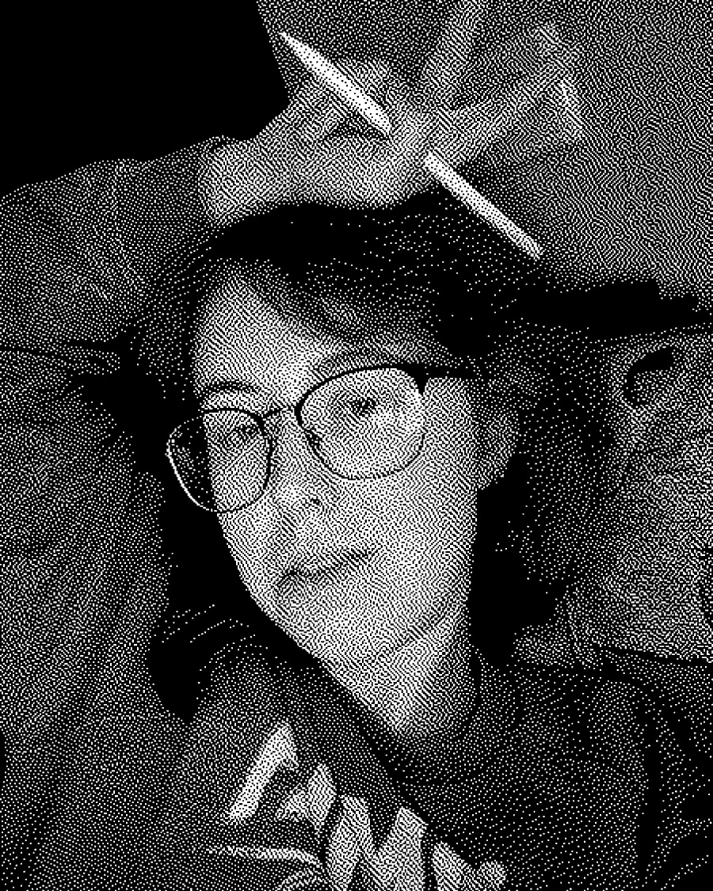

Ірина ШишковаIryna Shyshkova
(дизайнерка фестивалю)(festival designer)
Полтава, УкраїнаPoltava, Ukraine
Спеціалізується на комплексному візуальному супроводі подій: від повної айдентики фестивалів до окремих афіш або постів в соціальні мережі. Використовує життєствердність та помірну іронію як інструменти, що роблять дизайн легким та людяним.
Розробила візуальний стиль цього фестивалю.
Specializes in the comprehensive visual support of events — from a festival's full identity to individual posters or social media posts. Uses life-affirming positivity and gentle irony as tools that make design light and human.
Developed the visual identity of this festival.